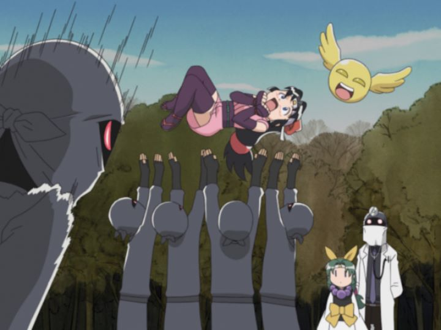

Anime comedies are a strange beast... the sense of humor they have is different from anything else. Japan funny is different from European funny is different from American funny, and English dub actors tend to bring their own level of silliness to make it stranger still. Sometimes, it's very funny, sometimes it isn't, sometimes it's both at the same time. "Ninja Nonsense" is one such comedy anime, and as the title suggests, it is mostly nonsense. Whether or not it is worth buying is very much based on the viewer.There's barely a plot, although there usually isn't for this type of anime. It's a slice of life that starts when Kaede, a normal schoolgirl, sees Shinobu, a ninja-in-training, trying to steal a pair of her panties for her ninja exam. From there, the show is held either at Kaede's house or at Shinobu's ninja mansion, where she and several generic male ninjas study under Onsokumaru, a perverted yellow blob. It isn't clear that they actually train, as most of the episodes are just of the characters hanging around doing random, silly things.Most of the jokes are of the perverted kind, which wouldn't be too bad if the female characters didn't look like they were 10 years old. There's no full nudity, but the further the show gets, the more perverted the jokes get, as if the characters have nothing better to do. To its credit, the show does contain perverted jokes against the males just as much as the females, so there isn't too much gender bias. They hint at Shinobu being a lesbian, but it seems like it was done just to be cute rather than anything meaningful. Onsokumaru is arguably the main character, but he's a shape-shifting yellow blob, and the show never attempts to explain what he is exactly, much to my annoyance.The problem is that the show just isn't that funny. That's not entirely true, you will chuckle a few times in each episode, and the nonsense gets sillier in the last few episodes. But the show is more cute than funny, which changes the target audience slightly. A couple jokes are entirely based on Japan-terms that will fly over your head ("2 x 2 = Shinobu" sounds cute, but I had to go to Wikipedia to find out the meaning). The English dub is especially strange... they dub the opening, and it sounds incredibly awkward and out of place, as if it was from a dub made during the 1990s. But the dub in the show sounds more suitable to the characters. Maybe they made it funny on purpose? We may never know. The opening also hints at a fantastic shadow-clone fighting episode which never takes place, sadly... to even mention "ninja" in the title would likely set false hopes on viewers in this case. Ufotable produced some of the most beautiful action shows in the 2010's decade, but "Ninja Nonsense" was made at a time when they were much more humble. The show looks ok, but not spectacular in any fashion, and I personally didn't care for the cutesy character designs. This was a time when the studio used to make stop-motion ending credit-sequences for each show, a lovely tradition they don't bother with anymore, so it was a treat to watch an older show that had this feature. The music is catchy and fits the tone, but otherwise seems average. Overall, the show grew on me a little. I did find myself laughing a little more in the last few episodes when it seemed more aware of itself. But these types of shows are never great enough to highly recommend, and never bad enough to say I hated it. The production and writing are all clearly from a certain time period in anime, and it doesn't age well to meet modern tastes. It's better suited for groups or clubs to watch together, and likely will be better received in such a setting. So, if you're looking for another cute, innocent but perverted comedy anime... well, here ya go.
- "Ani" More reviews can be found at : https://2danicritic.github.io/ Previous review: review_Night_Warriors_-_Darkstalkers'_Revenge Next review: review_Ninja_Scroll